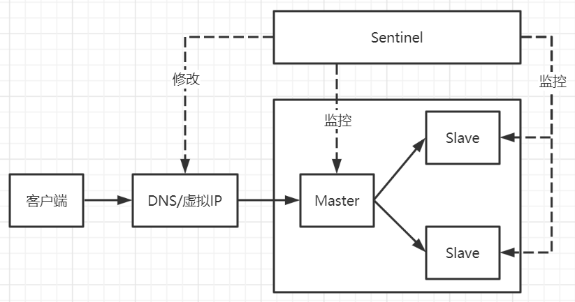
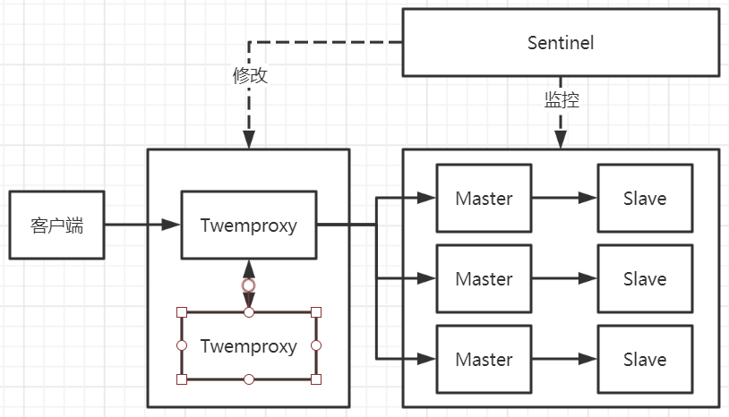
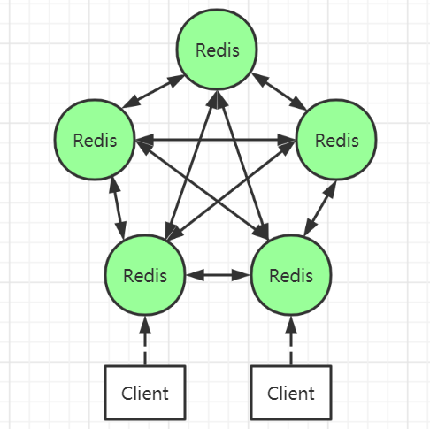
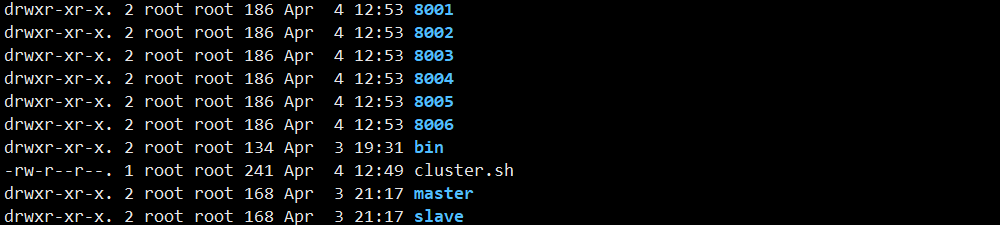

主从复制
主从复制虽然解决了单点故障问题，但是当主Redis或者从Redis出现问题时需要进行手动处理，这个处理过程不仅麻烦还容易出错。
主从复制+哨兵
在主从复制的基础上加上哨兵机制，可以进行自动故障转移，解决了手动处理故障时带来的问题。
架构图 
工作原理 当Redis Master节点宕机的时候，Sentinel会选举出新的Master，并根据Sentinel中的client-reconfig-script脚本配置的内容动态的修改虚拟IP，将虚拟IP指向新的Master。客户端直接使用虚拟IP，不用关心Redis内部Master节点的具体位置。
Sentinel在这里的作用
哨兵会不断地检查Master和Slave节点是否运行正常
当被监控的Redis节点出现问题时，哨兵可以通过API向管理员或者其他应用程序发送通知
当一个Master节点不能正常工作时，哨兵会进行自动故障迁移操作
架构缺陷
主从切换的过程中可能会丢失数据
Redis只能有一个主节点，不能水平扩容
客户端连接方案 内网DNS
底层是Redis Sentinel集群代理着Redis主从，客户端连接内网DNS获取服务。内网DNS配置规则如下：
xxxx.redis.cache/queue.port.xxx.xxx
第一段表示业务简写
第二段表示这是Redis内网域名
第三段表示Redis类型：cache表示缓存，queue表示队列
第四段表示Redis端口
第五、六段表示内网主域名
当主节点发生故障时，Sentinel集群会调用client-reconfig-script配置的脚本修改对应端口的内网域名，对应端口的内网域名指向新的Redis主节点。
该方案的优点是可以实现10秒内的秒级切换；可以自定义脚本，架构可控；对应用透明，客户端不用担心后端发生了什么。但其维护成本高；需要依赖DNS，存在解析超时的问题；哨兵也存在短时间服务不可用的问题；无法通过外网访问服务。
虚拟IP
底层同样是Redis Sentinel集群代理着Redis主从，只是将内网DNS换成了虚拟IP，客户端通过虚拟IP访问服务。在部署Redis主从的时候，需要将虚拟IP绑定到当前的Redis主节点。当主节点发生故障时，Sentinel集群会调用client-reconfig-script配置的脚本将虚拟IP转移到新的主节点上。
该方案可以实现5秒内的秒级切换，且可以自定义脚本，使架构可控；对应用是透明的，客户端不同担心后端发生了什么。但其维护成本更高，并且存在IP混乱的风险。
直连Sentinel端口
当只能通过外网访问Redis时，可以使用此种方案。客户端连接Sentinel集群中的一台机器的某个端口，通过这个端口获取到当前的主节点，然后连接到真实的Redis主节点进行相应的业务操作。这时，Sentinel端口和Redis主节点均需要开放访问权限。
此种方案的优点是服务探测故障很及时，维护成本低。但Sentinel服务器和Redis主节点需要开放访问权限，不是很安全。且对应用也有侵入性。
代理+主从复制+哨兵 架构图

代理部分可以使用Codis或者Twemproxy
工作原理
使用Twemproxy与KeepAlived做代理，将Redis中的多台实例分片进行统一管理与分配
每一个分片节点的Slave都是Master的副本，且只可以读取
Sentinel持续不断的监控每个分片节点的Master，当Master出现故障时，Sentinel会启动自动故障转移操作
Sentinel可以在进行故障转移后触发相应脚本，脚本获取到最新的Master来修改Twemproxy配置
缺陷
这套架构的部署结构很复杂，运维不方便。可扩展性很差，扩容缩容时需要手动干预
Redis Cluster 架构图 
架构解析
所有的Redis节点彼此互相连接，其内部使用二进制协议优化了传输速度和带宽
节点的失效判断需要集群中超过半数的节点都生效才能通过
客户端与Redis节点直接连接，不需要使用Proxy代理层，客户端不需要连接集群中所有节点，只需要连接集群中任何一个可用节点即可
Redis集群中内置了16384个哈希槽，当需要在Redis集群中放置一个键值对时，Redis先对key使用crc16算法算出一个结果，然后将结果对16384进行求余数，这样每个key都会对应一个编号在0~16383之间的哈希槽，Redis会根据节点数量进行判断然后将哈希槽映射到不同的节点上。Cluster负责维护节点、哈希槽、键值对。
Cluster投票机制 节点失效判断
集群中所有Master节点参与投票，如果半数以上Master节点与其中一个Master节点通信超时，便认为该Master节点宕机了
集群失效判断
如果集群中任意的Master节点失效，且该Master节点没有Slave节点，则集群进入fail状态。也就是哈希槽无法完全映射便进入fail状态
如果集群中超过半数以上的Master节点失效，无论是否有Slave节点，集群都会进入fail状态
Redis Cluster搭建 准备Redis服务 Redis集群最少需要三台主服务，三台从服务。以在单台服务器中进行搭建为例，准备六个Redis服务，端口为8001~8006
1 2 3 4 5 6 7 8 9 10 cd /opt/rediscp -r bin 8001 port 8001 cluster-enable yes
服务如图：

启动服务 编写启动脚本
1 2 3 4 5 6 7 8 9 10 11 12 13 14 15 16 17 18 19 20 21 cd /opt/redisvim cluster.sh cd 8001./redis-server redis.conf cd ..cd 8002./redis-server redis.conf cd ..cd 8003./redis-server redis.conf cd ..cd 8004./redis-server redis.conf cd ..cd 8005./redis-server redis.conf cd ..cd 8006./redis-server redis.conf
启动脚本
查看服务
1 2 3 4 5 6 7 8 ps -ef | grep redis root 2785 1 0 12:50 ? 00:00:01 ./redis-server *:8001 [cluster] root 2790 1 0 12:50 ? 00:00:01 ./redis-server *:8002 [cluster] root 2795 1 0 12:50 ? 00:00:01 ./redis-server *:8003 [cluster] root 2797 1 0 12:50 ? 00:00:01 ./redis-server *:8004 [cluster] root 2805 1 0 12:50 ? 00:00:01 ./redis-server *:8005 [cluster] root 2810 1 0 12:50 ? 00:00:01 ./redis-server *:8006 [cluster]
创建Cluster集群 1 2 3 4 5 6 7 8 9 10 11 12 13 14 15 16 17 18 19 20 21 22 23 24 25 26 27 28 29 30 31 32 33 34 35 36 37 38 39 40 41 42 43 44 45 46 47 48 49 50 51 52 53 54 55 cd /opt/redis/bin./redis-cli --cluster create 127.0.0.1:8001 127.0.0.1:8002 127.0.0.1:8003 127.0.0.1:8004 127.0.0.1:8005 127.0.0.1:8006 --cluster-replicas 1 >>> Performing hash slots allocation on 6 nodes... Master[0] -> Slots 0 - 5460 Master[1] -> Slots 5461 - 10922 Master[2] -> Slots 10923 - 16383 Adding replica 127.0.0.1:8005 to 127.0.0.1:8001 Adding replica 127.0.0.1:8006 to 127.0.0.1:8002 Adding replica 127.0.0.1:8004 to 127.0.0.1:8003 >>> Trying to optimize slaves allocation for anti-affinity [WARNING] Some slaves are in the same host as their master M: 232d900d704d286986ba6b963dc86744e57aaefc 127.0.0.1:8001 slots:[0-5460] (5461 slots) master M: a32493f69b40c55fcd5e7b2248a2b9c3027b1bda 127.0.0.1:8002 slots:[5461-10922] (5462 slots) master M: 3d4b17b4948d4ff339071d868410e9e59ea2a28e 127.0.0.1:8003 slots:[10923-16383] (5461 slots) master S: 1de95368e59ae85e80904c95981b673809b79817 127.0.0.1:8004 replicates 3d4b17b4948d4ff339071d868410e9e59ea2a28e S: 7cf1ca1ea1f2d41b546100d83076da4aa644afcf 127.0.0.1:8005 replicates 232d900d704d286986ba6b963dc86744e57aaefc S: bd1153497200728771f0c2fb0de57caffffbc773 127.0.0.1:8006 replicates a32493f69b40c55fcd5e7b2248a2b9c3027b1bda Can I set the above configuration? (type 'yes' to accept): yes >>> Nodes configuration updated >>> Assign a different config epoch to each node >>> Sending CLUSTER MEET messages to join the cluster Waiting for the cluster to join .... >>> Performing Cluster Check (using node 127.0.0.1:8001) M: 232d900d704d286986ba6b963dc86744e57aaefc 127.0.0.1:8001 slots:[0-5460] (5461 slots) master 1 additional replica(s) M: 3d4b17b4948d4ff339071d868410e9e59ea2a28e 127.0.0.1:8003 slots:[10923-16383] (5461 slots) master 1 additional replica(s) S: 7cf1ca1ea1f2d41b546100d83076da4aa644afcf 127.0.0.1:8005 slots: (0 slots) slave replicates 232d900d704d286986ba6b963dc86744e57aaefc S: bd1153497200728771f0c2fb0de57caffffbc773 127.0.0.1:8006 slots: (0 slots) slave replicates a32493f69b40c55fcd5e7b2248a2b9c3027b1bda M: a32493f69b40c55fcd5e7b2248a2b9c3027b1bda 127.0.0.1:8002 slots:[5461-10922] (5462 slots) master 1 additional replica(s) S: 1de95368e59ae85e80904c95981b673809b79817 127.0.0.1:8004 slots: (0 slots) slave replicates 3d4b17b4948d4ff339071d868410e9e59ea2a28e [OK] All nodes agree about slots configuration. >>> Check for open slots... >>> Check slots coverage... [OK] All 16384 slots covered.
连接集群 1 2 cd /opt/redis/bin./redis-cli -p 8001 -c
查看集群信息 1 2 3 4 5 6 7 8 9 10 11 12 13 14 15 16 17 127.0.0.1:8001> cluster info cluster_state:ok cluster_slots_assigned:16384 cluster_slots_ok:16384 cluster_slots_pfail:0 cluster_slots_fail:0 cluster_known_nodes:6 cluster_size:3 cluster_current_epoch:6 cluster_my_epoch:1 cluster_stats_messages_ping_sent:973 cluster_stats_messages_pong_sent:978 cluster_stats_messages_sent:1951 cluster_stats_messages_ping_received:973 cluster_stats_messages_pong_received:973 cluster_stats_messages_meet_received:5 cluster_stats_messages_received:1951
查看集群节点信息 1 2 3 4 5 6 7 127.0.0.1:8001> cluster nodes 3d4b17b4948d4ff339071d868410e9e59ea2a28e 127.0.0.1:8003@18003 master - 0 1617513119566 3 connected 10923-16383 7cf1ca1ea1f2d41b546100d83076da4aa644afcf 127.0.0.1:8005@18005 slave 232d900d704d286986ba6b963dc86744e57aaefc 0 1617513117000 5 connected 232d900d704d286986ba6b963dc86744e57aaefc 127.0.0.1:8001@18001 myself,master - 0 1617513117000 1 connected 0-5460 bd1153497200728771f0c2fb0de57caffffbc773 127.0.0.1:8006@18006 slave a32493f69b40c55fcd5e7b2248a2b9c3027b1bda 0 1617513119000 6 connected a32493f69b40c55fcd5e7b2248a2b9c3027b1bda 127.0.0.1:8002@18002 master - 0 1617513120593 2 connected 5461-10922 1de95368e59ae85e80904c95981b673809b79817 127.0.0.1:8004@18004 slave 3d4b17b4948d4ff339071d868410e9e59ea2a28e 0 1617513119000 4 connected
测试 1 2 3 127.0.0.1:8001> set key value -> Redirected to slot [12539] located at 127.0.0.1:8003 OK
可以看到该数据的哈希槽，以及保存的节点位置
Cluster水平扩容 新增Master节点
1 2 3 4 5 6 7 8 9 10 11 12 13 14 15 16 17 18 19 20 21 22 23 24 25 26 27 28 29 30 31 32 33 34 35 36 37 cd /opt/rediscp -r 8001 8007 port 8007 ./redis-cli --cluster add-node 127.0.0.1:8007 127.0.0.1:8006 >>> Adding node 127.0.0.1:8007 to cluster 127.0.0.1:8006 >>> Performing Cluster Check (using node 127.0.0.1:8006) S: bd1153497200728771f0c2fb0de57caffffbc773 127.0.0.1:8006 slots: (0 slots) slave replicates a32493f69b40c55fcd5e7b2248a2b9c3027b1bda M: 232d900d704d286986ba6b963dc86744e57aaefc 127.0.0.1:8001 slots:[0-5460] (5461 slots) master 1 additional replica(s) M: a32493f69b40c55fcd5e7b2248a2b9c3027b1bda 127.0.0.1:8002 slots:[5461-10922] (5462 slots) master 1 additional replica(s) S: 1de95368e59ae85e80904c95981b673809b79817 127.0.0.1:8004 slots: (0 slots) slave replicates 3d4b17b4948d4ff339071d868410e9e59ea2a28e M: 3d4b17b4948d4ff339071d868410e9e59ea2a28e 127.0.0.1:8003 slots:[10923-16383] (5461 slots) master 1 additional replica(s) S: 7cf1ca1ea1f2d41b546100d83076da4aa644afcf 127.0.0.1:8005 slots: (0 slots) slave replicates 232d900d704d286986ba6b963dc86744e57aaefc [OK] All nodes agree about slots configuration. >>> Check for open slots... >>> Check slots coverage... [OK] All 16384 slots covered. >>> Send CLUSTER MEET to node 127.0.0.1:8007 to make it join the cluster. [OK] New node added correctly.
查看节点信息
1 2 3 4 5 6 7 8 127.0.0.1:8003> cluster nodes 27b1063fbd2789429448293f59bbe75be1ae775c 127.0.0.1:8007@18007 master - 0 1617514663000 0 connected bd1153497200728771f0c2fb0de57caffffbc773 127.0.0.1:8006@18006 slave a32493f69b40c55fcd5e7b2248a2b9c3027b1bda 0 1617514665000 6 connected 7cf1ca1ea1f2d41b546100d83076da4aa644afcf 127.0.0.1:8005@18005 slave 232d900d704d286986ba6b963dc86744e57aaefc 0 1617514665588 5 connected 1de95368e59ae85e80904c95981b673809b79817 127.0.0.1:8004@18004 slave 3d4b17b4948d4ff339071d868410e9e59ea2a28e 0 1617514663536 4 connected 232d900d704d286986ba6b963dc86744e57aaefc 127.0.0.1:8001@18001 master - 0 1617514661486 1 connected 0-5460 a32493f69b40c55fcd5e7b2248a2b9c3027b1bda 127.0.0.1:8002@18002 master - 0 1617514664563 2 connected 5461-10922 3d4b17b4948d4ff339071d868410e9e59ea2a28e 127.0.0.1:8003@18003 myself,master - 0 1617514663000 3 connected 10923-16383
发现新增的节点还没有分配哈希槽
分配哈希槽
1 2 3 4 5 6 7 8 9 10 11 12 13 14 15 16 17 18 19 20 21 22 23 24 25 26 27 28 29 30 31 32 33 34 35 36 37 38 39 40 41 42 ./redis-cli --cluster reshard 127.0.0.1:8003 --cluster-from 232d900d704d286986ba6b963dc86744e57aaefc,a32493f69b40c55fcd5e7b2248a2b9c3027b1bda,3d4b17b4948d4ff339071d868410e9e59ea2a28e --cluster-to 27b1063fbd2789429448293f59bbe75be1ae775c >>> Performing Cluster Check (using node 127.0.0.1:8003) M: 3d4b17b4948d4ff339071d868410e9e59ea2a28e 127.0.0.1:8003 slots:[10923-16383] (5461 slots) master 1 additional replica(s) M: 27b1063fbd2789429448293f59bbe75be1ae775c 127.0.0.1:8007 slots: (0 slots) master S: bd1153497200728771f0c2fb0de57caffffbc773 127.0.0.1:8006 slots: (0 slots) slave replicates a32493f69b40c55fcd5e7b2248a2b9c3027b1bda S: 7cf1ca1ea1f2d41b546100d83076da4aa644afcf 127.0.0.1:8005 slots: (0 slots) slave replicates 232d900d704d286986ba6b963dc86744e57aaefc S: 1de95368e59ae85e80904c95981b673809b79817 127.0.0.1:8004 slots: (0 slots) slave replicates 3d4b17b4948d4ff339071d868410e9e59ea2a28e M: 232d900d704d286986ba6b963dc86744e57aaefc 127.0.0.1:8001 slots:[0-5460] (5461 slots) master 1 additional replica(s) M: a32493f69b40c55fcd5e7b2248a2b9c3027b1bda 127.0.0.1:8002 slots:[5461-10922] (5462 slots) master 1 additional replica(s) [OK] All nodes agree about slots configuration. >>> Check for open slots... >>> Check slots coverage... [OK] All 16384 slots covered. How many slots do you want to move (from 1 to 16384)? 4000 ... Moving slot 12254 from 3d4b17b4948d4ff339071d868410e9e59ea2a28e Moving slot 12255 from 3d4b17b4948d4ff339071d868410e9e59ea2a28e Do you want to proceed with the proposed reshard plan (yes/no)? yes ... Moving slot 12253 from 127.0.0.1:8003 to 127.0.0.1:8007: Moving slot 12254 from 127.0.0.1:8003 to 127.0.0.1:8007: Moving slot 12255 from 127.0.0.1:8003 to 127.0.0.1:8007:
查看新状态
1 2 3 4 5 6 7 8 127.0.0.1:8001> cluster nodes 3d4b17b4948d4ff339071d868410e9e59ea2a28e 127.0.0.1:8003@18003 master - 0 1617515353584 3 connected 12256-16383 7cf1ca1ea1f2d41b546100d83076da4aa644afcf 127.0.0.1:8005@18005 slave 232d900d704d286986ba6b963dc86744e57aaefc 0 1617515350503 5 connected 232d900d704d286986ba6b963dc86744e57aaefc 127.0.0.1:8001@18001 myself,master - 0 1617515352000 1 connected 1333-5460 bd1153497200728771f0c2fb0de57caffffbc773 127.0.0.1:8006@18006 slave a32493f69b40c55fcd5e7b2248a2b9c3027b1bda 0 1617515352000 6 connected a32493f69b40c55fcd5e7b2248a2b9c3027b1bda 127.0.0.1:8002@18002 master - 0 1617515352558 2 connected 6795-10922 1de95368e59ae85e80904c95981b673809b79817 127.0.0.1:8004@18004 slave 3d4b17b4948d4ff339071d868410e9e59ea2a28e 0 1617515349000 4 connected 27b1063fbd2789429448293f59bbe75be1ae775c 127.0.0.1:8007@18007 master - 0 1617515354618 7 connected 0-1332 5461-6794 10923-12255
新的节点已经分配了哈希槽
新增Slave节点
1 2 3 4 cd /opt/rediscp -r 8001 8008
添加节点到集群
1 2 3 4 5 6 7 8 9 10 11 12 13 14 15 16 17 18 19 20 21 22 23 24 25 26 27 28 29 30 31 32 33 34 ./redis-cli --cluster add-node 127.0.0.1:8008 127.0.0.1:8001 --cluster-slave --cluster-master-id 27b1063fbd2789429448293f59bbe75be1ae775c >>> Adding node 127.0.0.1:8008 to cluster 127.0.0.1:8001 >>> Performing Cluster Check (using node 127.0.0.1:8001) M: 232d900d704d286986ba6b963dc86744e57aaefc 127.0.0.1:8001 slots:[1333-5460] (4128 slots) master 1 additional replica(s) M: 3d4b17b4948d4ff339071d868410e9e59ea2a28e 127.0.0.1:8003 slots:[12256-16383] (4128 slots) master 1 additional replica(s) S: 7cf1ca1ea1f2d41b546100d83076da4aa644afcf 127.0.0.1:8005 slots: (0 slots) slave replicates 232d900d704d286986ba6b963dc86744e57aaefc S: bd1153497200728771f0c2fb0de57caffffbc773 127.0.0.1:8006 slots: (0 slots) slave replicates a32493f69b40c55fcd5e7b2248a2b9c3027b1bda M: a32493f69b40c55fcd5e7b2248a2b9c3027b1bda 127.0.0.1:8002 slots:[6795-10922] (4128 slots) master 1 additional replica(s) S: 1de95368e59ae85e80904c95981b673809b79817 127.0.0.1:8004 slots: (0 slots) slave replicates 3d4b17b4948d4ff339071d868410e9e59ea2a28e M: 27b1063fbd2789429448293f59bbe75be1ae775c 127.0.0.1:8007 slots:[0-1332],[5461-6794],[10923-12255] (4000 slots) master [OK] All nodes agree about slots configuration. >>> Check for open slots... >>> Check slots coverage... [OK] All 16384 slots covered. >>> Send CLUSTER MEET to node 127.0.0.1:8008 to make it join the cluster. Waiting for the cluster to join ....... >>> Configure node as replica of 127.0.0.1:8007. [OK] New node added correctly.
查看新的节点状态
1 2 3 4 5 6 7 8 9 127.0.0.1:8001> cluster nodes 3d4b17b4948d4ff339071d868410e9e59ea2a28e 127.0.0.1:8003@18003 master - 0 1617516395000 3 connected 12256-16383 7cf1ca1ea1f2d41b546100d83076da4aa644afcf 127.0.0.1:8005@18005 slave 232d900d704d286986ba6b963dc86744e57aaefc 0 1617516394974 5 connected 232d900d704d286986ba6b963dc86744e57aaefc 127.0.0.1:8001@18001 myself,master - 0 1617516393000 1 connected 1333-5460 bd1153497200728771f0c2fb0de57caffffbc773 127.0.0.1:8006@18006 slave a32493f69b40c55fcd5e7b2248a2b9c3027b1bda 0 1617516395993 6 connected 5a58d1c50b7f2a1d2babb16b1875d4ce3a6c60a7 127.0.0.1:8008@18008 slave 27b1063fbd2789429448293f59bbe75be1ae775c 0 1617516394000 7 connected a32493f69b40c55fcd5e7b2248a2b9c3027b1bda 127.0.0.1:8002@18002 master - 0 1617516394000 2 connected 6795-10922 1de95368e59ae85e80904c95981b673809b79817 127.0.0.1:8004@18004 slave 3d4b17b4948d4ff339071d868410e9e59ea2a28e 0 1617516395000 4 connected 27b1063fbd2789429448293f59bbe75be1ae775c 127.0.0.1:8007@18007 master - 0 1617516397019 7 connected 0-1332 5461-6794 10923-12255
Cluster缩容 删除从节点
1 2 3 4 ./redis-cli --cluster del-node 127.0.0.1:8001 5a58d1c50b7f2a1d2babb16b1875d4ce3a6c60a7 >>> Removing node 5a58d1c50b7f2a1d2babb16b1875d4ce3a6c60a7 from cluster 127.0.0.1:8001 >>> Sending CLUSTER FORGET messages to the cluster... >>> SHUTDOWN the node.
查看节点状态
1 2 3 4 5 6 7 8 127.0.0.1:8001> cluster nodes 3d4b17b4948d4ff339071d868410e9e59ea2a28e 127.0.0.1:8003@18003 master - 0 1617518875000 3 connected 12256-16383 7cf1ca1ea1f2d41b546100d83076da4aa644afcf 127.0.0.1:8005@18005 slave 232d900d704d286986ba6b963dc86744e57aaefc 0 1617518874000 5 connected 232d900d704d286986ba6b963dc86744e57aaefc 127.0.0.1:8001@18001 myself,master - 0 1617518873000 1 connected 1333-5460 bd1153497200728771f0c2fb0de57caffffbc773 127.0.0.1:8006@18006 slave a32493f69b40c55fcd5e7b2248a2b9c3027b1bda 0 1617518876616 6 connected a32493f69b40c55fcd5e7b2248a2b9c3027b1bda 127.0.0.1:8002@18002 master - 0 1617518874552 2 connected 6795-10922 1de95368e59ae85e80904c95981b673809b79817 127.0.0.1:8004@18004 slave 3d4b17b4948d4ff339071d868410e9e59ea2a28e 0 1617518875584 4 connected 27b1063fbd2789429448293f59bbe75be1ae775c 127.0.0.1:8007@18007 master - 0 1617518877642 7 connected 0-1332 5461-6794 10923-12255
转移Master节点哈希槽
1 ./redis-cli --cluster reshard 127.0.0.1:8003 --cluster-from 27b1063fbd2789429448293f59bbe75be1ae775c --cluster-to 3d4b17b4948d4ff339071d868410e9e59ea2a28e
查看点状态
1 2 3 4 5 6 7 8 127.0.0.1:8001> cluster nodes 3d4b17b4948d4ff339071d868410e9e59ea2a28e 127.0.0.1:8003@18003 master - 0 1617519505000 8 connected 0-1332 5461-6794 10923-16383 7cf1ca1ea1f2d41b546100d83076da4aa644afcf 127.0.0.1:8005@18005 slave 232d900d704d286986ba6b963dc86744e57aaefc 0 1617519504000 5 connected 232d900d704d286986ba6b963dc86744e57aaefc 127.0.0.1:8001@18001 myself,master - 0 1617519506000 1 connected 1333-5460 bd1153497200728771f0c2fb0de57caffffbc773 127.0.0.1:8006@18006 slave a32493f69b40c55fcd5e7b2248a2b9c3027b1bda 0 1617519506426 6 connected a32493f69b40c55fcd5e7b2248a2b9c3027b1bda 127.0.0.1:8002@18002 master - 0 1617519504000 2 connected 6795-10922 1de95368e59ae85e80904c95981b673809b79817 127.0.0.1:8004@18004 slave 3d4b17b4948d4ff339071d868410e9e59ea2a28e 0 1617519505406 8 connected 27b1063fbd2789429448293f59bbe75be1ae775c 127.0.0.1:8007@18007 master - 0 1617519507446 7 connected
删除Master服务
1 2 3 4 ./redis-cli --cluster del-node 127.0.0.1:8001 27b1063fbd2789429448293f59bbe75be1ae775c >>> Removing node 27b1063fbd2789429448293f59bbe75be1ae775c from cluster 127.0.0.1:8001 >>> Sending CLUSTER FORGET messages to the cluster... >>> SHUTDOWN the node.
查看节点状态
1 2 3 4 5 6 7 127.0.0.1:8001> cluster nodes 3d4b17b4948d4ff339071d868410e9e59ea2a28e 127.0.0.1:8003@18003 master - 0 1617519810000 8 connected 0-1332 5461-6794 10923-16383 7cf1ca1ea1f2d41b546100d83076da4aa644afcf 127.0.0.1:8005@18005 slave 232d900d704d286986ba6b963dc86744e57aaefc 0 1617519811000 5 connected 232d900d704d286986ba6b963dc86744e57aaefc 127.0.0.1:8001@18001 myself,master - 0 1617519809000 1 connected 1333-5460 bd1153497200728771f0c2fb0de57caffffbc773 127.0.0.1:8006@18006 slave a32493f69b40c55fcd5e7b2248a2b9c3027b1bda 0 1617519811320 6 connected a32493f69b40c55fcd5e7b2248a2b9c3027b1bda 127.0.0.1:8002@18002 master - 0 1617519809266 2 connected 6795-10922 1de95368e59ae85e80904c95981b673809b79817 127.0.0.1:8004@18004 slave 3d4b17b4948d4ff339071d868410e9e59ea2a28e 0 1617519808240 8 connected
Master节点已被删除